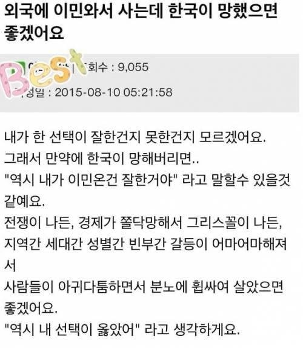

외국에 이민와서 사는데 한국이 망했으면 좋겠어요.jpg
댓글
솔직하네 나도 퇴사한 전직장들 개쳐망했으면좋겠음
전직장이 망한 기업만 있으면 또 좀 그래...
저런애들이 아프면 한국 기어들어옴 ㅋㅋ
이민갔을때 본국 위상이 높아야 무시안받음
한국에 온 이민자도 후진국출신인지 선진국출신인지에 따라 대우가 다르다더만
병신새끼. 저딴 마인드로 살아가는 새끼가 해외라고 잘 살고 있을 거라는 생각은 전혀 안 드네. 총맞아 죽었거나 한국에 돌아오지는 않았기를 바란다
쟤가 존나 불행하게 살고 있다는 건 알겠네 ㅋㅋㅋㅋㅋㅋㅋㅋ
안에서 새는 바가지는 밖에서도 ㅠㅠ
쟤도 풍자하는 거잖아...
보통 저나라에서도 적응 못한거임
진짜 못났다 어떻게 살까 저런놈은
난 해마다 한번 한국가는 낙에 사는데
나 미국산지 10년 넘었는데 그동안 한국 위상이 올라간게 존나 좋음. 한국음식 구하기도 쉽고, 내 문화 설명 안해도 대충 알고 있고 등등. 직장동료 한명은 애완견 이름이 소주 드라. ㅋㅋ 시발
쟤는 그냥 멍청한거임. 한국이 잘 나간다고 지가 잘나갔을것도 아니면서
이민자 사회의 위상은
본국의 위상이랑 엮여있는데
쟤는 진짜 1차원적 생각인거지
헤이 쟄콕 컴히얼
헤이 앱솔루트 컴온
헤이 라거 컴온
그래도 솔직했잖아 한잔해
82쿡이네
15년 글이고 유저 나이대 생각하면 이미 노인일듯
얼마나 배아플거임
가서 적응 못한 사람들이 저런 마인드로 살더라
인터넷에서도 가끔 보임
말하는 꼴을 보니 이민가서도 밑바닥 하층민 인생 사는거같네
동양인이 동양권 이외의 사회로 이민을 가는 경우라면 기본적으로 동양인은 최하층 깔개취급을 함
사회적 지위가 올라가면 올라갈수록 사회적인 영역에서 노골적으로 차별이 발생하니까 이걸 모를수가 없는데
본국의 위상이 오를수록 이런 차별이 줄어듦
물론 그럼에도 아예 사라지는건 아니지만
요는 거주하는 국가에서 인식하는 본국의 위상에 따라 사회적 대우가 바뀐다는거임
그걸 모르고 내가 탈출한게 잘한거라는 확신을 갖고싶어서 한국 망하라고 하는건 사회적 지위가 밑바닥이 아니면 설명이 안됨
밑바닥은 너도 병신 나도 병신이라 체격만 좋으면 면전에서는 무시 안당하거든ㅋㅋ
남의 불행에서 본인의 행복을 찾는 사람은
결코 행복해질 수 없다
한국이 잘되야 본인인식이 좋아진다는건 왜 인지하지못할까 ? 개 거렁뱅이처럼 살고있어서? ㅋㅋㅋㅋㅋㅋ
나도 내가판 주식은 떨어지길 바라긴해…
일단 저 글쓴이 인생이 얼마나 시궁창인지는 잘 알겠네 ㅋㅋ
저게 2015년글인데 2026이랑 비교해보면 한국위상 조올라게 올라갔는데?
배아플려나? ㅋㅋㅋㅋ
저거 딱 그거잖아 씹덕앰생일뽕쭈구리가 우리나라 욕하는거 ㅋㅋ 우리나라가 좆돼야 지가 일뽕인게 정당화된다고
병신...망한 나라에서 온 이방인이 어떤 취급을 받을지 모르는거야...그나저나 이런 새끼들은 사이코패스야 소시오패스야
나도 니가 망했으면 좋겠어요 할머니
저 사람 아마 지금도 저 나라 언어 제대로 못할 것 같음.
솔찍한 모습을 높이사서 절대 안망해야지
본국이 잘살아야 대접받는것도 모르네
남들이 불행하다고 자신이 행복해지는게 아닌데
안타깝다
잘나가야 소도시 마트에 한국인 아예 없어도 한국제품이 계속 들어오지. 체감 잘됨. 앞으로 한국 더 잘나가야함
사실 저게 디폴트 속마음인데 다들 깨시민인척 하는거 까지가 템플릿